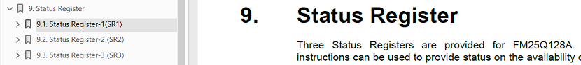

U-Boot 移植
20 Nov 2024
Read time: 4 minute(s)
SPI NOR 要工作既需要 SoC 端 SPI 模块的驱动能力，也需要对 SPI NOR 模块的正确配置，本章阐述如何进行 SPI NOR 器件的移植工作，以
CFX 的 GM25Q128A 和 FudanMicro 的
FM25Q128 为例。-
U-Boot 中移植一款 SPI NOR，最重要的是 JEDEC ID，通过在数据手册中查找 0x9F 命令获得
-
其他的参数都可以默认设置，INFO(0xa14017, 0, 64 * 1024, n_sectors, SECT_4K | SPI_NOR_DUAL_READ | SPI_NOR_QUAD_READ)
U-Boot 中 对不同厂家的 SPI NOR 器件的管理集成度很高， 主要代码在
source/uboot-2021.10/drivers/mtd/spi/spi-nor-ids.c
中，添加一款新厂家的新器件需要经过如下步骤：
- 添加厂家的宏定义。
config SPI_FLASH_FMSH bool "FudanMicro SPI flash support" help Add support for various FMSH (Shanghai Fudan Microelectronics Group Company) SPI flash chips (FM25xxx). config SPI_FLASH_CFX bool "CFX SPI flash support" help Add support for various CFX (Zhuhai ChuangFeiXin-Technology) SPI flash chips (GM25xxx). - 在 spi-nor-ids.c 的 spi_nor_ids 结构中添加
FMHS 和 CFX
的相关器件的支持。
#ifdef CONFIG_SPI_FLASH_FMSH /* Shanghai Fudan Microelectronics Group Company */ { INFO("FM25Q128", 0xa14017, 0, 64 * 1024, 256, SECT_4K | SPI_NOR_DUAL_READ | SPI_NOR_QUAD_READ) }, { INFO("FM25Q64", 0xa14018, 0, 64 * 1024, 128, SECT_4K | SPI_NOR_DUAL_READ | SPI_NOR_QUAD_READ) }, #endif #ifdef CONFIG_SPI_FLASH_CFX /* Zhuhai ChuangFeiXin Technology */ { INFO("GM25Q128A", 0x1c4018, 0, 64 * 1024, 256, SECT_4K | SPI_NOR_DUAL_READ | SPI_NOR_QUAD_READ) }, #endif - 设置 flash_infoflash_info 数据结构主要用来描述某一颗 SPI NOR 的参数，通过 INFO 宏来设置，其详细结构为：
struct flash_info { char *name; //器件名称，一般用器件编号替代 u8 id[SPI_NOR_MAX_ID_LEN]; //JEDEC 授权的器件 ID u8 id_len; //ID 长度，填 0，自动计算 unsigned sector_size; //sector size，现在的意义已经改变 u16 n_sectors; //sector 数目，通过 flash size 和 sector size 计算出来 u16 page_size; //页大小， INFO 宏固定为 256 u16 addr_width; //board.dts 中配置 u32 flags; //功能标识- JEDEC ID：和 SPI NAND 不同， SPI NOR 的 ID 包含 Manufacture ID 和
Device ID 等多项内容，一般为 24 位，描述方式为
阈值 名称 示例 标记方式 MID7 - IDF0 Maunfacture ID 0xa1 JEDEC 分配 D15 - D8 Memory Type 0x40 0x9F 命令 D7 - D0 Memory Desity 0x17 0x9F 命令 不同厂家在数据手册中描述方法不一样，但现代的 SPI NOR 的 MID 一般通过 “Maunfacture/MID” 等字段标注，Device ID 的（D15 - D0） 一般通过 0x9F 命令标注， 因此在数据手册中通过搜索 9F 一般能构造出 JEDEC ID， 如下图所示
- 0xC84018

- 0xC22018

- 0xA14017

- 0xC84018
- sector_size：Sector Size 是个历史产物，不管是文件系统还是厂家的器件规格都开始对外提供基于
Block 的接口，但在名称上还保留了 Sector 的名称，而驱动中则已经完全切换到 Block 的逻辑
Sector Size 主要定义的是擦除参数，一般的器件提供三种擦除操作
操作方式 命令 擦除大小 备注 Sector Erase( SE) 0x20 4K 基础能力，主要做兼容，不做主力 32K Block Erase (BE) 0x52 32K 不再使用，和 BE-64 成对 64K Block Erase (BE) 0xD8 64K 大部分都支持，如果不支持则必须支持 SE 在驱动中，Sector_Size 描述的实际是 BE-64 的参数，而 BE-64 要求的 size 又是固定的 64K，因此该参数的设置原则是：
- 在数据手册中，如果支持 64K Block Erase (0xD8）命令，则设置为 ‘64 * 1024’
- 在数据手册中, 如果不支持 64K Block Erase (0xD8）命令，则设置为 ‘4 * 1024’
- n_sectors：Sector (Block) 数目通过计算得到， 计算公式为 (（flash size）/
sector size)，需要注意不同参数使用 Byte（B） 还是 bit（b） 描述
-
gd25q128： 128Mb / 64KB = 256
-
FM25Q128: 128Mb / 64KB = 256
-
FM25Q64: 64Mb / 64KB = 128
-
- flags：设置额外的功能标志。
- SECT_4K 建议均设置，此功能用来兼容 Sector Erase( SE) 的支持，在一些特殊情况下可以继续工作
- 如果支持 0xBB 命令，则打开 SPI_NOR_DUAL_READ
- 如果支持 0xEB 命令，则打开 SPI_NOR_QUAD_READ

- 如果有 Status Register，则打开 USE_FSR，是一种状态呈现，非必须 
- JEDEC ID：和 SPI NAND 不同， SPI NOR 的 ID 包含 Manufacture ID 和
Device ID 等多项内容，一般为 24 位，描述方式为